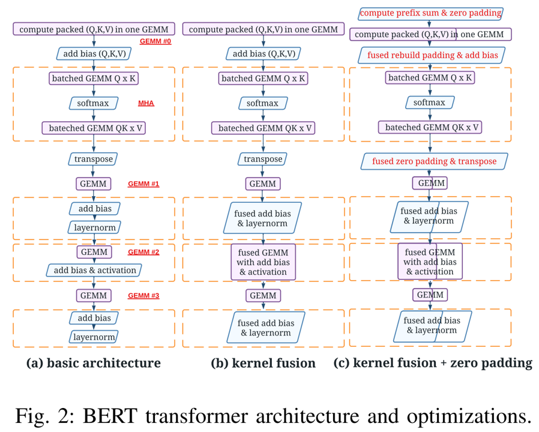
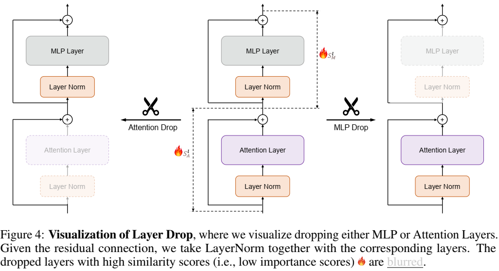
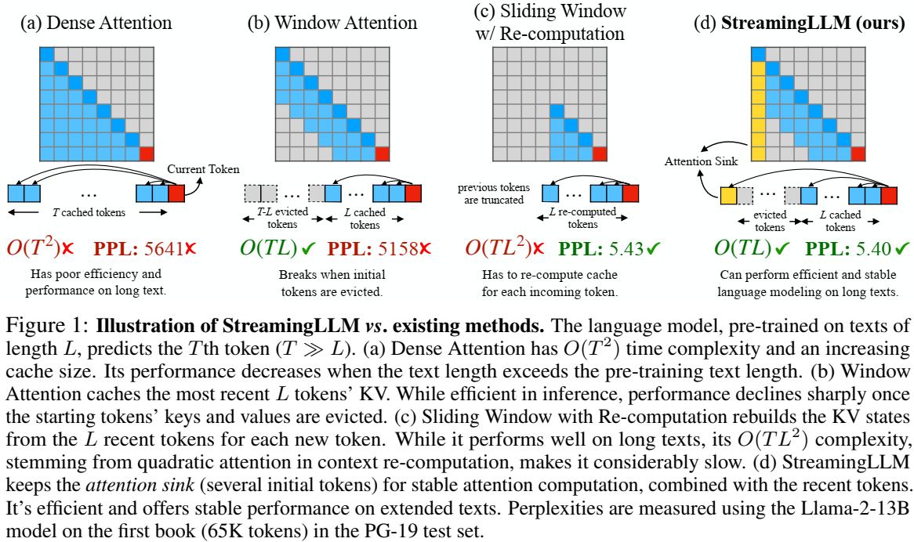

综述一：Transformer及其变体
Transformer架构，因其自注意力机制而闻名，能够让模型根据输入序列中不同的标记之间的关系进行加权。这种机制消除了循环神经网络的需求，使得训练变得更加高效。自从2017年原始Transformer的提出以来，已经出现了多个变种，旨在优化性能、扩展其适用范围或解决一些挑战。以下是一些著名的Transformer变种，特别是那些专注于自注意力机制的：
1. 原始Transformer (Vanilla Transformer)
- 关键特性：原始Transformer架构包括一个编码器-解码器结构，采用自注意力机制。
- 目的：消除了递归神经网络的需求，使得模型训练更加并行化和高效。
- 自注意力机制：多头自注意力，通过计算输入序列中所有标记之间的关系来决定重要性。
2. BERT（双向编码器表示）
- 关键特性：BERT只使用Transformer的编码器部分，采用双向自注意力机制来捕获标记的左右上下文。
- 目的：通过掩蔽语言模型（MLM）进行预训练，并可以通过微调来提升在下游NLP任务中的表现。
3. GPT（生成式预训练Transformer）
- 关键特性：GPT使用单向（因果）自注意力机制，每个标记只能注意到其前面的标记。
- 目的：作为自回归模型，主要用于文本生成任务，即根据前面的标记预测下一个标记。
4. T5（文本到文本的传输Transformer）
- 关键特性：T5将每个NLP任务都转化为文本到文本的问题，输入和输出都以文本格式表示。
- 目的：使用统一的框架处理多种任务，如翻译、摘要和问答。
5. Transformer-XL（扩展长序列Transformer）
- 关键特性：Transformer-XL引入了递归机制和基于段落的递归方法，使得模型能够处理更长的序列，并建模长期依赖关系。
- 目的：通过扩展上下文来改进长距离依赖的处理能力。
6. XLNet
- 关键特性：XLNet扩展了Transformer-XL，通过使用排列训练目标，既能捕获双向上下文（像BERT），又能保持自回归特性（像GPT）。
- 目的：结合BERT和GPT的优点，在生成式和理解式任务中都能表现出色。
7. RoBERTa（鲁棒优化的BERT）
- 关键特性：RoBERTa是BERT的变种，通过使用更多的数据、更长的训练时间，并移除下一个句子预测任务来改进BERT。
- 目的：优化BERT的预训练过程，提升下游任务的表现。
8. ALBERT（轻量化BERT）
- 关键特性：ALBERT通过在层间共享权重和因式分解嵌入矩阵来减少模型的大小和复杂性。
- 目的：在保持性能的同时，减少计算资源的消耗和模型大小。
9. DistilBERT
- 关键特性：DistilBERT是通过知识蒸馏（Knowledge Distillation）生成的BERT的一个小版本，保留了97%的BERT语言理解能力，但参数更少。
- 目的：为资源受限的环境创建一个更小、更快速的BERT版本。
10. Longformer
- 关键特性：Longformer引入了稀疏自注意力机制，每个标记仅关注一个有限的局部窗口，而不是与所有其他标记进行计算。
- 目的：专门设计用于高效处理长文档，通过减少自注意力的二次复杂度，降低计算量。
11. Linformer
- 关键特性：Linformer通过低秩矩阵分解来近似自注意力机制，将注意力操作的复杂度从(O(n^2))降低到(O(n))。
- 目的：使自注意力机制能够扩展到长序列上。
12. Reformer
- 关键特性：Reformer使用局部敏感哈希（LSH）来减少注意力的复杂性，并使用可逆层来减少内存使用。
- 目的：为长序列的处理提供更高效的内存使用，并优化计算效率。
13. ELECTRA
- 关键特性：ELECTRA通过生成器和鉴别器来替换预训练中的掩蔽标记。鉴别器预测一个标记是真实的还是被替换的。
- 目的：比BERT更加样本高效，可以使用更少的训练资源获得更好的性能。
14. DeBERTa（解码增强BERT与解耦注意力）
- 关键特性：DeBERTa引入了解耦注意力，能够更好地建模位置和相对标记之间的交互。
- 目的：通过增强标记之间的依赖关系建模，改进BERT和RoBERTa的性能。
15. Swin Transformer（平移窗口Transformer）
- 关键特性：这是专门为视觉任务设计的Transformer架构，在局部窗口内应用自注意力机制，在层间通过平移窗口捕获全局上下文。
- 目的：用于计算机视觉任务，如图像分类，通过分层结构实现高效的图像处理。
16. Vision Transformer（ViT）
- 关键特性：将标准Transformer架构应用于视觉任务，将图像划分为多个小块，将这些小块视为输入序列的标记。
- 目的：通过不使用卷积神经网络（CNN）进行图像分类等视觉任务，探索图像处理的新方法。
17. Performer
- 关键特性：Performer通过基于核方法的近似来替换传统的自注意力机制，从而提高了计算效率。
- 目的：通过近似核方法提高注意力机制的效率，优化计算资源的消耗。
18. LaMDA（对话应用的语言模型）
- 关键特性：由Google设计，LaMDA是一个对话型AI模型，采用针对对话任务优化的Transformer架构。
- 目的：生成更加自然和开放式的对话。
19. BigBird
- 关键特性：BigBird是另一个用于长文档的变种，通过组合全局、局部和随机注意力模式来减少计算复杂度。
- 目的：高效处理长文档，在内存和计算效率上超越早期的模型。
20. 稀疏Transformer
- 关键特性：稀疏Transformer通过限制标记之间的交互来减少自注意力的计算成本。
- 目的：通过使用稀疏注意力模式来高效处理长序列。
21. Mistral
- 关键特性：Mistral是一种高效的密集Transformer模型，设计时考虑了稀疏性和计算效率，旨在比GPT和BERT更轻量。
- 目的：在性能和计算效率之间找到平衡，构建更加紧凑的模型。
22. Funnel Transformer
- 关键特性：Funnel Transformer使用渐进式降采样机制，将序列长度在层级中逐渐减少，专注于更相关的信息。
- 目的：通过逐渐缩减输入序列，在减少计算成本的同时高效地处理长序列。
这些变种展示了Transformer架构随着时间发展而做出的多种适应和改进，涉及到计算效率、内存使用、长序列处理、以及特定任务的优化等不同方面。其中一些变种专注于提高处理长序列的能力（例如Longformer、Linformer、Reformer），而其他一些则优化了处理特定任务的能力（例如Vision Transformer用于图像，T5用于多任务NLP）。
变长输入
ByteTransformer: A High-Performance Transformer Boosted for Variable-Length Inputs (22/10)
论文地址
代码
核心思想：在过去的十年里，Transformer已经成为自然语言处理中的关键模型。它们在深度学习应用中非常受欢迎，但transformer模型所需的参数空间的大小越来越大，因此需要相应地加速性能。自然语言处理问题也经常面临可变长度序列，因为句子中的字数通常各不相同。现有的深度学习框架将可变长度序列填充到最大长度，这增加了大量的内存和计算开销。在本文中，介绍了 ByteTransformer，这是一种针对可变长度输入而增强的高性能transformer。我们提出了一种无填充算法，可将整个transformer从零填充标记上的冗余计算中解放出来。除了算法级优化之外，我们还为transformer功能模块提供架构感知优化，尤其是性能关键算法多头注意力 (MHA)。

模型剪枝
What Matters in Transformers? Not All Attention is Needed (24/06)
论文地址
代码
核心思想：虽然扩展基于Transformer的大型语言模型（LLM）在各种任务中表现出了良好的性能，但它也引入了冗余架构，给现实世界的部署带来了效率挑战。尽管对LLM中的冗余有一些认识，但transformers中不同架构（如MLP和Attention层）之间的冗余可变性尚未得到充分探索。在这项工作中，我们使用基于相似性的度量来研究Transformer中不同模块之间的冗余，包括块、MLP和注意力层。令人惊讶的是，尽管注意力层在区分transformers和其他架构方面起着关键作用，但我们发现这些层中的很大一部分表现出过高的相似性，可以在不降低性能的情况下进行修剪。例如，Llama-2-70B通过修剪一半的注意力层，实现了48.4%的加速，性能仅下降了2.4%。此外，通过在整个训练过程中跟踪模型检查点，我们观察到注意力层冗余是固有的，并且在训练阶段是一致的。此外，我们还提出了一种联合丢弃Attention和MLP层的方法，使我们能够更积极地丢弃其他层。例如，当丢弃31层（Attention+MLP）时，Llama-2-13B在MMLU任务上仍然保留了90%的性能。我们的工作为未来的网络架构设计提供了宝贵的见解。

LLM模型
Efficient Streaming Language Models with Attention Sinks (23/09)
论文地址
代码
核心思想：在多轮对话等需要长时间交互的流式应用中部署大型语言模型 (LLM) 迫在眉睫，但面临两大挑战。首先，在解码阶段，缓存先前标记的键和值状态 (KV) 会消耗大量内存。其次，流行的 LLM 无法推广到比训练序列长度更长的文本。窗口注意（仅缓存最近的 KV）是一种自然的方法 - 但我们表明，当文本长度超过缓存大小时，它会失败。我们观察到一个有趣的现象，即注意力下沉，即保留初始标记的 KV 将在很大程度上恢复窗口注意的性能。在本文中，我们首先证明注意力下沉的出现是由于对初始标记作为“下沉”的强烈注意力得分，即使它们在语义上并不重要。基于上述分析，我们引入了 StreamingLLM，这是一个高效的框架，它使使用有限长度注意力窗口训练的 LLM 能够推广到无限序列长度而无需任何微调。我们表明，StreamingLLM 可使 Llama-2、MPT、Falcon 和 Pythia 使用多达 400 万个或更多的标记执行稳定而高效的语言建模。此外，我们发现在预训练期间添加占位符标记作为专用的注意力接收器可以进一步改善流式部署。在流式设置中，StreamingLLM 的表现优于滑动窗口重新计算基线，速度提高高达 22.2 倍。
